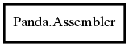

Assembler
Object Hierarchy:

Description:
The manager for an assembly
Namespace: Panda
Package: pandaseq-2
Content:
Properties:
-
public Algorithm algorithm { set; get; }
The algorithm used in overlap selection.
-
public long bad_read_count { get; }
The number of sequences rejected because the reads are unsatisfactory in some way.
-
public long count { get; }
The number of sequences processed so far.
-
public long failed_alignment_count { get; }
The number of sequences rejected because the overlap could not be determined.
-
public Nt[]? forward_primer { set; get; }
The forward primer sequence to be stripped
-
public size_t forward_trim { set; get; }
The amount of forward sequence to strip
-
public LogProxy logger { get; }
-
public long low_quality_count { get; }
The number of sequences rejected because the quality score is too low.
-
public int minimum_overlap { set; get; }
The minimum overlap two sequences must have to be accepted. It must be greater than one.
-
public string? name { set; get; }
The assembler's name in logging output.
-
public long no_forward_primer_count { get; }
The number of sequences rejected because the forward primer could not be aligned.
-
public long no_reverse_primer_count { get; }
The number of sequences rejected because the reverse primer could not be aligned.
-
public size_t num_kmer { get; }
The size of the k-mer table in this assembler.
-
public long ok_count { get; }
The number of sequences accepted.
-
public Overlaps overlaps { get; }
The distribution of overlaps produced so far.
-
public bool primers_after { set; get; }
Whether to strip the primers before or after assembly.
-
public Nt[]? reverse_primer { set; get; }
The reverse primer sequence to be stripped
-
public size_t reverse_trim { set; get; }
The amount of reverse sequence to strip
-
public long slow_count { get; }
The numer of sequences where all possible overlaps had to be examined, instead of a quick hashing.
-
public double threshold { set; get; }
The minimum quality threshold to have an assembly accepted. Must be between 0 and 1, exclusive.
Static methods:
Creation methods:
Methods: